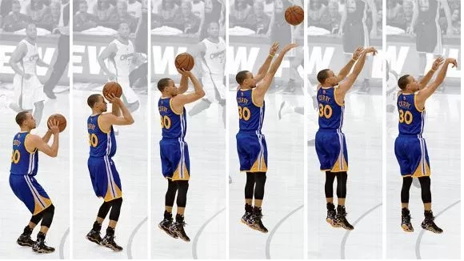
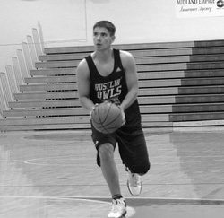
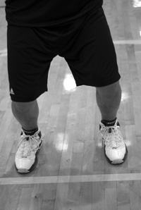
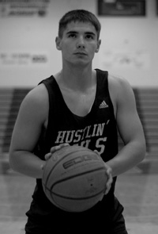
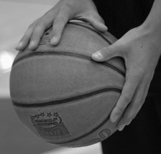
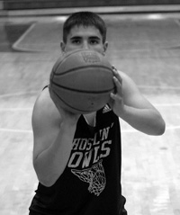
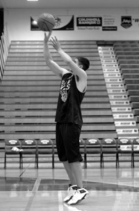
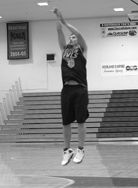

Shooting

Your shooting hand should extend in a straight line to the rim. Hand position on delivery is very important. The ball should come off the hand with perfect symmetrical backspin. As shown in the picture to the right, your guide hand stays to the side and does not influence the flight of the ball.
Here's a quick roadmap of the stationary shooting fundamentals that we'll be covering:
- Eyes on Target
- Stance and Balance
- Shot Pocket
- Grip
- Balance Hand
- Delivery
- Upforce and Landing
- Follow Through
- Correct Shot
EYES ON TARGET
- -To improve accuracy, locate the target (rim) as early as possible.
- -Keep your eyes on the target and do not follow the flight of the ball.
- -Keeping your target focus is very important!
STANCE AND BALANCE
- -Feet are shoulder width apart for good balance.
- -Feet should be in a slightly staggered stance that is consistent and comfortable for you. Your shooting foot is slightly ahead of the non-shooting foot in a comfortable position.
- -Point your feet in the general direction of the basket, but not necessarily directly at it. We prefer an open stance, but you can also use the closed (squared) stance if that's more comfortable for you. With an open stance, your feet point towards one side of the basket. For example, a right handed shooter will point his or her feet just to the left of the rim for a more natural position and shooting motion.
- -Once you develop a comfortable stance, line up your feet the exact same way on every shot. Whatever stance you use, consistency is critical.
- -Flex/bend your knees on every shot. 
SHOT POCKET
- -As you catch the ball, move it quickly into the shot pocket.
- -Line everything up so the ball and your shooting eye form a straight line to the basket. This is VERY important.
- -Position the ball several inches above your waist.
- -Grip the ball properly and be ready to shoot.
- -Position the ball in your shot pocket the SAME way every time you catch it.
GRIP
- -Place the air hole between the middle and index fingers.
- -Line up your fingertip pads parallel to the long seams of the ball, so you can monitor the back spin.
- -Leave space between the ball and the middle of your palm. You should be able to insert a pencil between the ball and your palm area. -Spread your fingers far enough apart to comfortably balance the ball in one hand.
- -The ball should sit on your finger pads. 
BALANCE HAND
- -Your non-shooting hand should be on the side of the ball.
- -Your balance hand should not add force or spin to the shot.
- -Your non-shooting hand should not move on delivery and should ALWAYS come off the ball FIRST. 
DELIVERY
- -The ball should start motion directly upwards from the shot pocket (no dipping of the ball).
- -Your elbow should be positioned comfortably under the ball.
- -The ball stays in front of you and should not go behind your head.
- -Uncoil your body with your legs, core, and arm power all coordinated. 
- -Your elbow and wrist should extend in a straight line to the basket.
- -Your shooting hand should extend in a straight line to the rim.
- -Hand position on delivery is very important. The ball should come off the hand with perfect symmetrical backspin.
- -As shown in the picture to the right, your guide hand stays to the side and does not influence the flight of the ball.
UPFORCE AND LANDING
- -Release the ball on the way up, just before the top of your jump.
- -Use your legs to generate upforce.
- -You should land in the same spot that you jumped, which shows that you have good balance on your shot. 
FOLLOW-THROUGH
- -Your wrists should be floppy (relaxed).
- -Fingers should be pointed at the target (rim).
- -Finish high. You should see your fingers at the top square of the back board.
- -Hold your follow through position until the ball hits the rim.